← Índice de los 69 tutes de IDA
Tute 49 · Cierre user-mode / rumbo a kernel
se conecta con: Fuera de alcance
INTRODUCCION AL REVERSING CON IDA PRO DESDE CERO PARTE 49.
USE AFTER FREE
Hemos visto a lo largo de este curso, la base del uso de IDA para realizar reversing estático, unpacking, exploiting, aún quedan varios temas más para abarcar, pero dentro de la rama del exploiting nos queda una de las formas de explotación más difíciles y que asusta a mucha gente veremos los USE AFTER FREE.
Hemos visto el tema de buffer overflows en forma bastante completa, como explotar y desbordar buffers en el stack y en el heap, en varios ejercicios y vídeos que hemos subido a youtube.
Para tratar de entender los use after free, usaremos el EXAMEN 20 como ejemplo pues realmente se puede explotar solamente como USE AFTER FREE, no hay overflow en ninguna parte del código y los buffers están correctos siempre, si ese es el caso, como se puede explotar y desviar la ejecución?
Para poder entender necesitaran bajarse primero el código fuente del examen 20
https://drive.google.com/file/d/0B13TW0I0f8O2WDRfQTlvT1JoNnc/view?usp=sharing
El ejecutable que esta zipeado y tiene password a
https://drive.google.com/file/d/0B13TW0I0f8O2N1gtZWNianZpNnM/view?usp=sharing
Y los símbolos
https://drive.google.com/file/d/0B13TW0I0f8O2c3RRUUpJTFJMaEE/view?usp=sharing
Deberían renombrarlos con el mismo nombre del ejecutable con extensión pdb o cuando IDA les dice que no los encuentra buscarlos y decirle donde están para que los cargue.
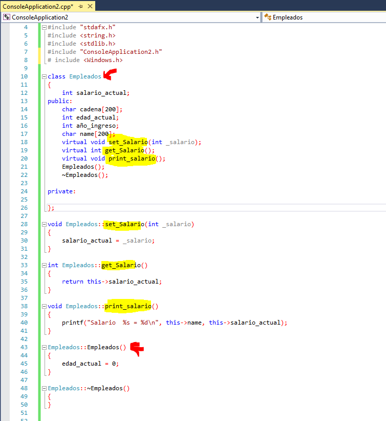
Vemos en el código fuente una clase llamada Empleados, su constructor Empleados::Empleados y los métodos virtuales que hablando mal y pronto, serían las funciones que utilizaran las instancias de esta clase.
Hasta acá todo bien veamos las instancias en el main.
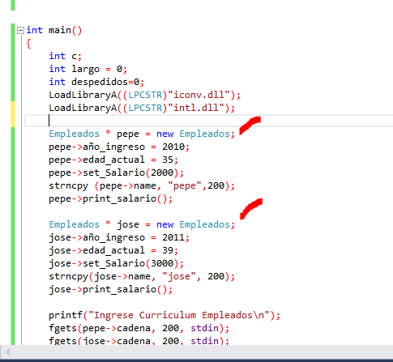
Vemos dos instancias una llamada pepe y otra jose de dicha clase Empleados, la misma en este caso se efectúa usando la función new(), que es bastante similar a malloc pero para mas orientada a crear en este caso dichas instancias, reservando la memoria necesaria en el heap. (recordamos que cuando traceabamos la función new() dentro terminábamos en malloc ).
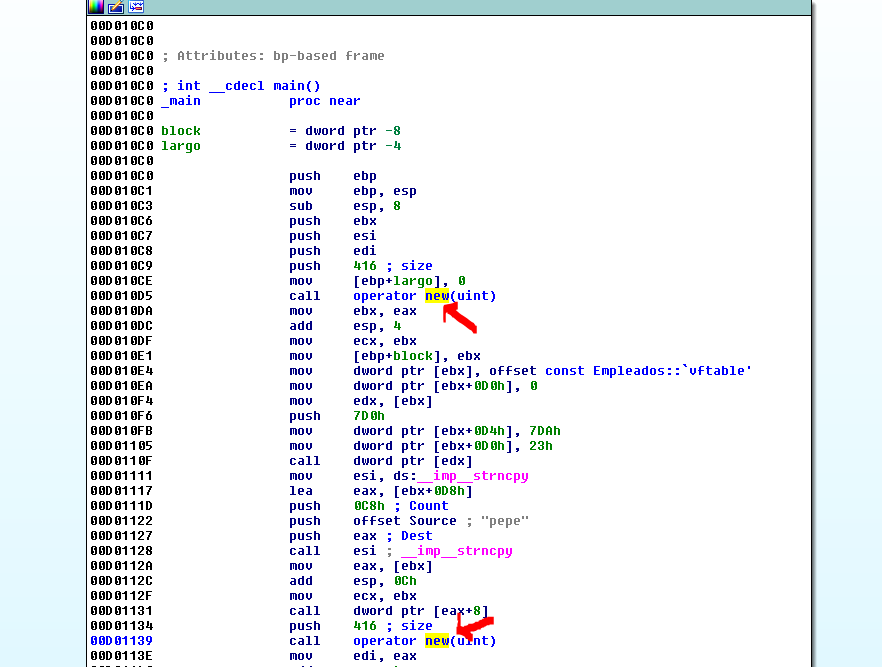
Ahí vemos en el ejecutable los dos llamados a new() para crear ambas instancias pepe y jose.
Y si miramos dentro del new vemos que llama a malloc con el size que está allí como argumento, en este caso 416 decimal o 0x1A0 que es el size que necesita cada instancia.
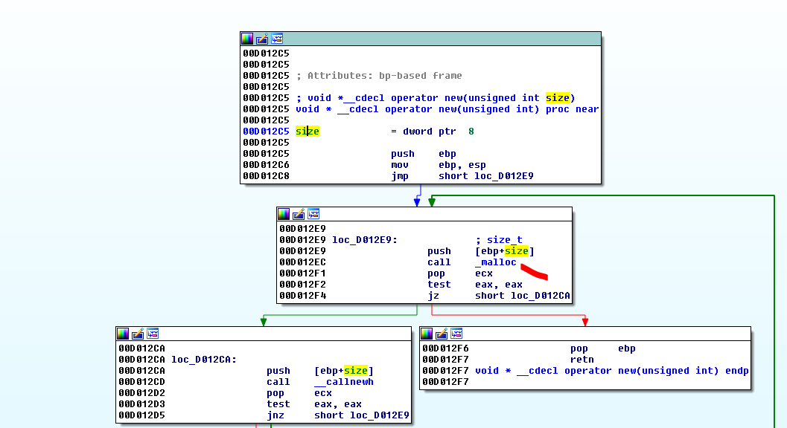
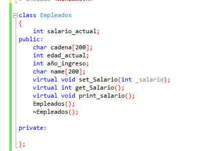
Sabemos que a bajo nivel la instancia es como una variable de tipo estructura y debe tener lugar para guardar todos los atributos de la clase, que son equivalentes a los campos de la estructura, vemos un int para salario actual, y en la parte publica un buffer de 200 bytes decimal llamado cadena, otro llamado name y vemos también la declaración de los métodos virtuales.
Normalmente dentro del constructor, en el primer lugar del espacio reservado para cada instancia se guarda un puntero a una tablita llamaba vtable las direcciones a los métodos virtuales y en cada instancia habrá un puntero a dicha tablita o vtable.
En el ejercicio 19 anterior que era también de clases, a pesar de que no había new porque la instancia era una variable en el stack y no en el heap, se veía claramente el constructor.
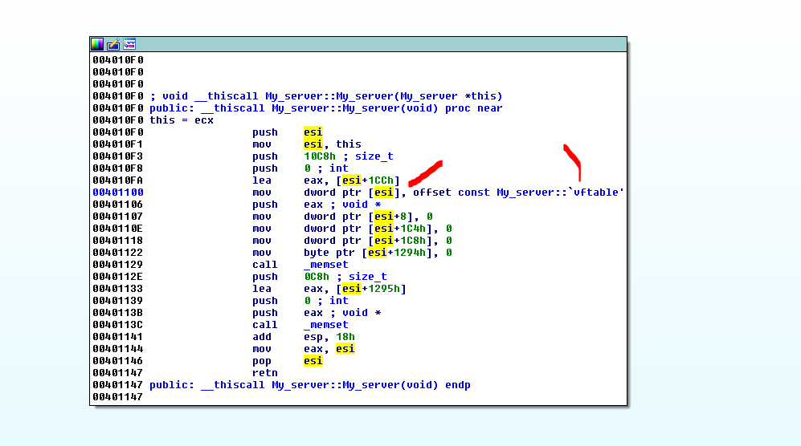
Y como dentro del mismo en el primer dword guardaba el puntero a la vtable.
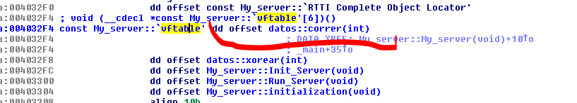
Que apuntaba a los métodos virtuales, ahora en este ejemplo no se ve el constructor en el IDA si existiera, como tenemos los símbolos debería llamarse Empleados::Empleados y no existe ese método.
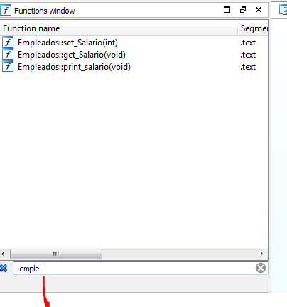
Bueno lo que pasa es que el compilador como vio que el constructor es muy pequeño y hace casi nada al optimizar, elimino dicho método y lo reemplazo por las instrucciones que contiene.
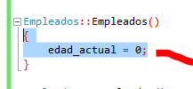
El constructor solo pone a cero ese atributo y además debe setear la vtable justo después del new que crea la instancia , veamos en el IDA.
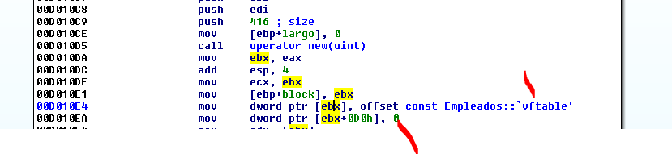
Allí hace ambas cosas, pone a cero dicho atributo y setea la vtable para su uso posterior.
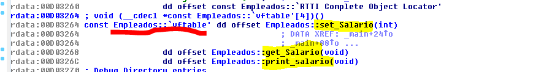
Así que guarda en el primer lugar de la memoria reservada de cada instancia, un puntero a esa tablita o vtable.
Antes de reversear el examen completo, que lo veremos en el vídeo correspondiente, veamos como es el mecanismo de la vulnerabilidad USE AFTER FREE y como se explotaría.
Vemos que dentro del programa, según se den ciertas condiciones, se borra mediante delete() que es equivalente a free(), la instancia de pepe o la de jose.
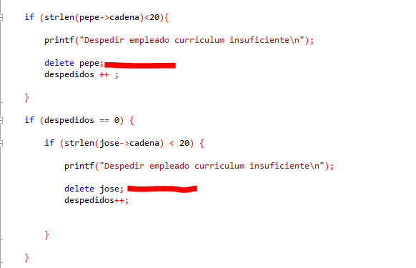
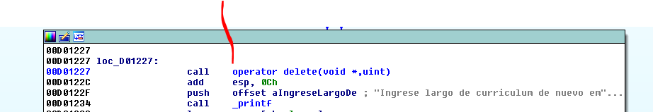
Vemos que después de dejar de existir alguna de dichas instancias a algún genio se le ocurre pedir los sueldos de todos los Empleados para sacar el gasto total y para eso usa el método virtual get_Salario aplicado a cada instancia.
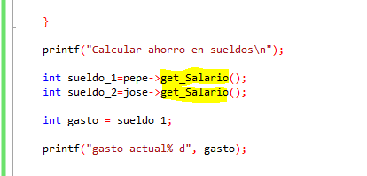
Pongámosle que pepe sea la instancia que se borró, al intentar llamar a get_salario, buscara en su bloque que ha sido liberado (free) y tratara de usar el puntero a la vtable que se encontraba allí dentro y intentara saltar al método get_Salario, pero como el bloque esta liberado, es posible que el programa al continuar corriendo, alloque allí mismo si se le pide y pise el puntero a la vtable.
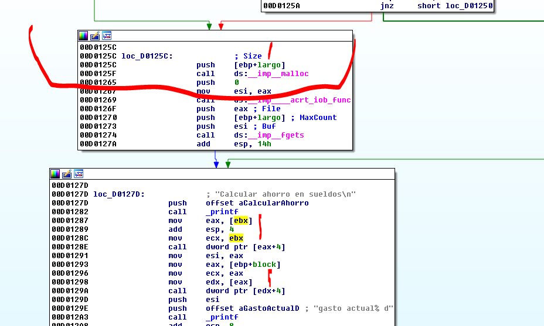
Allí abajo vemos las llamadas a get_Salario, cada instancia buscara dentro en su primer lugar su puntero a la vtable y tratara de saltar a dicho método, pero la explotación consiste en tratar de ver cuál es el size del objeto que se borró y allocar ese mismo size y llenar con nuestra fruta el bloque que antes ocupaba la instancia pepe, y ahora se llenara de nuestra fruta, de esa forma al saltar a get_Salario ya que pisamos su puntero a la vtable, redirigiremos la ejecución donde queramos.
Lo veremos ejecutando a mano sin realizar un script.
Corro el examen en IDA pongo breakpoints en los new().
Estoy usando Windows 7 que por ahora me asegura que con un solo malloc puedo pisar el bloque fritado ya veremos cómo hacer en w10.
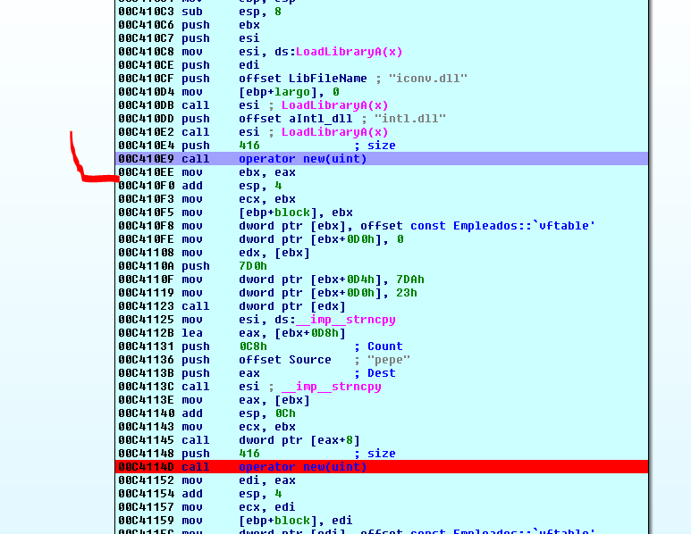
Allí estoy parado le pido 416 bytes paso el new con f8.
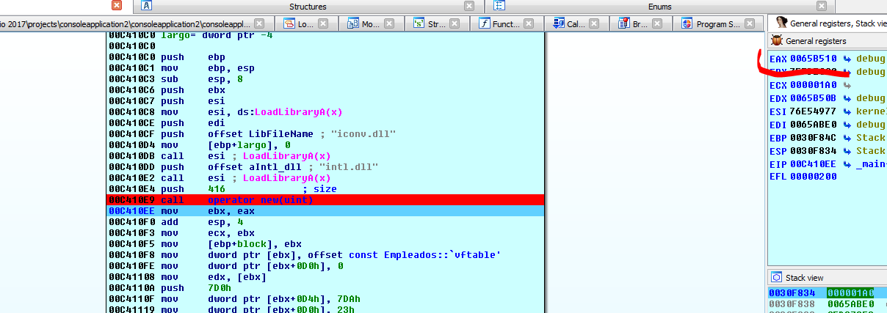
En mi caso me da un bloque que empieza en 0x65b510
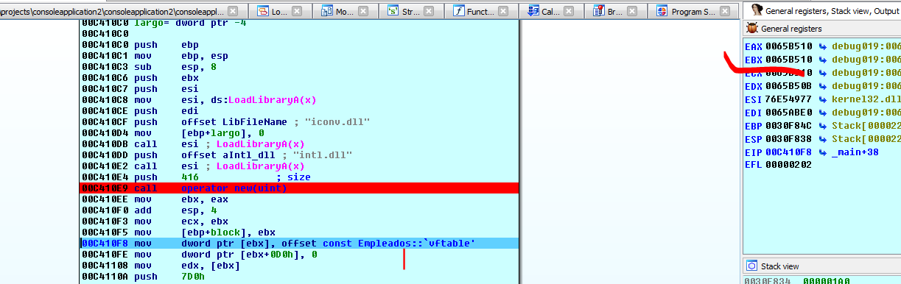
Vemos que en el primer dword guarda el puntero a la vtable, EBX apunta allí donde guardara.
Allí está la vtable pero recordemos que en la memoria alocada hay un puntero a aquí.
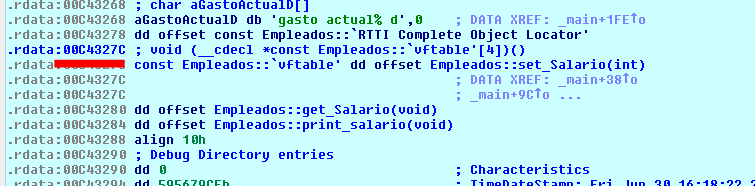
Sigamos al otro new()
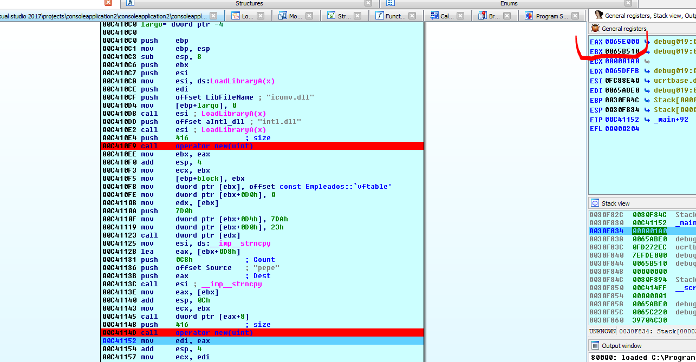
La segunda instancia jose se ubicara en mi caso en 0x65e000 y abajo se guardara allí su puntero a la vtable.
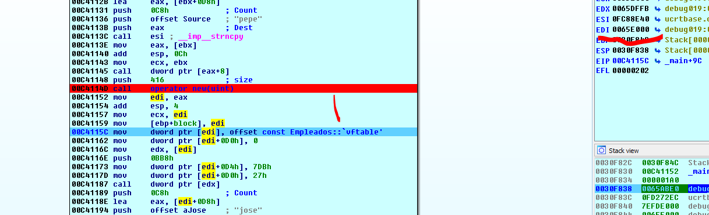
Por supuesto este puntero esta en la segunda instancia, pero apunta a la misma vtable que el de la primera.
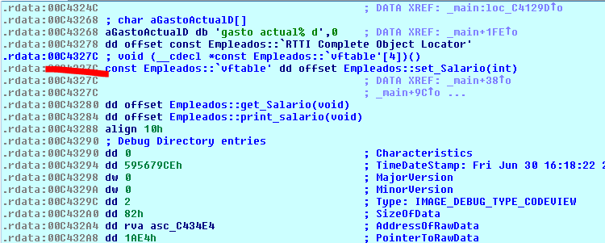
Sigamos
Luego hay una parte que dice que ingresemos el curriculum de los empleados y hay un fgets.
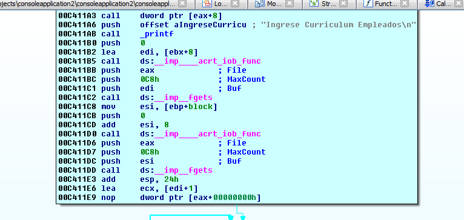
Podemos poner un breakpoint mas abajo en el delete y dar run.
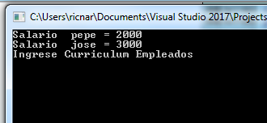
Tipeo algo corto
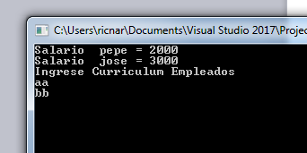
Cuando apreto ENTER llega al delete()
El argumento del delete es la dirección de la instancia a borrar.
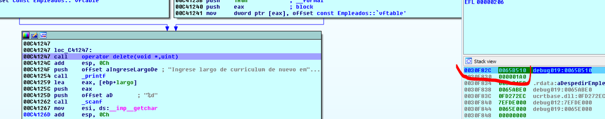
Vemos que borrara la de 0x65b510 que era la primera o sea la de pepe.
Si traceo dentro del delete veo que llega a free a liberar la memoria en 0x65b510.
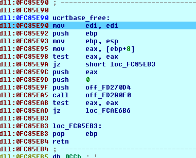
Luego me dice que ingrese el largo del curriculum
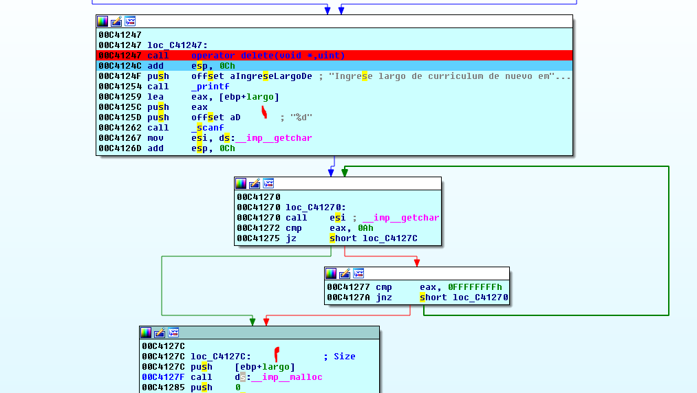
Y ese valor sera el que use para allocar y allí copiara, para explotar el use after free debería pasarle el mismo size de las instancias borradas o sea 416 decimal.
Si pongo un breakpoint en el malloc y doy run le tipeo ese size 416
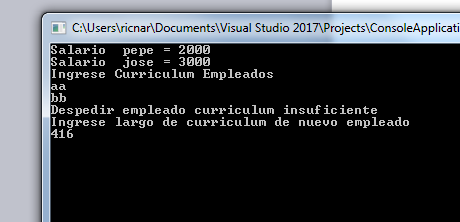
Al apretar enter llego al malloc
Veo que va a hacer malloc de 416 si me devuelve la misma dirección de memoria que frito voy bien sino me reventó jeje.
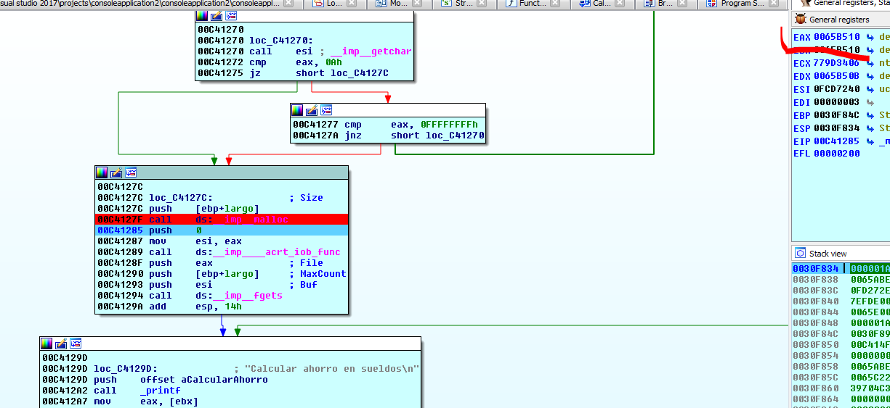
Vemos que me allocó en la misma dirección jeje, ahora solo debo copiar mi fruta allí, la misma se ingresa con el fgets doy run poniendo un breakpoint en el printf.
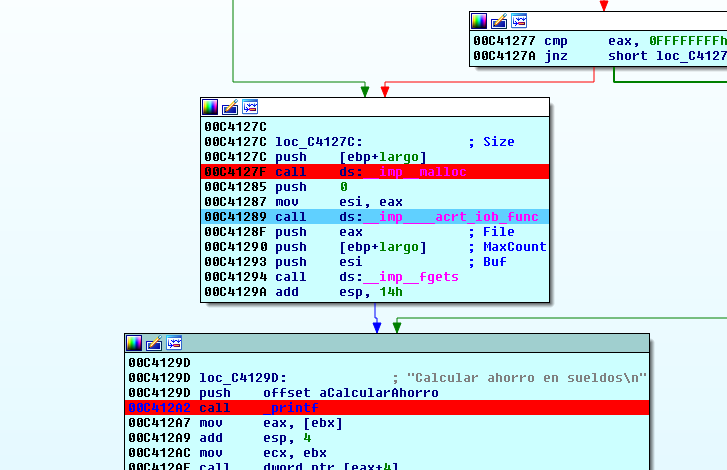
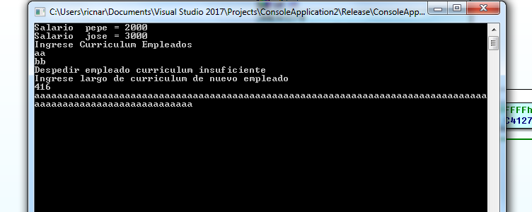
Tipeo mi fruta y al dar ENTER.
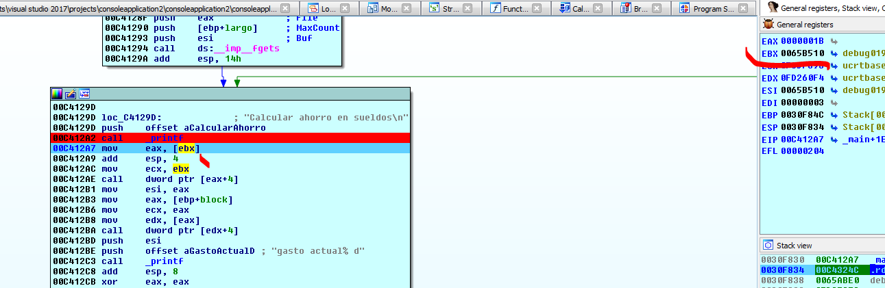
Vemos que trata de buscar el puntero a la vtable de pepe en 0x65b510 y allí yo llene con mis Aes.
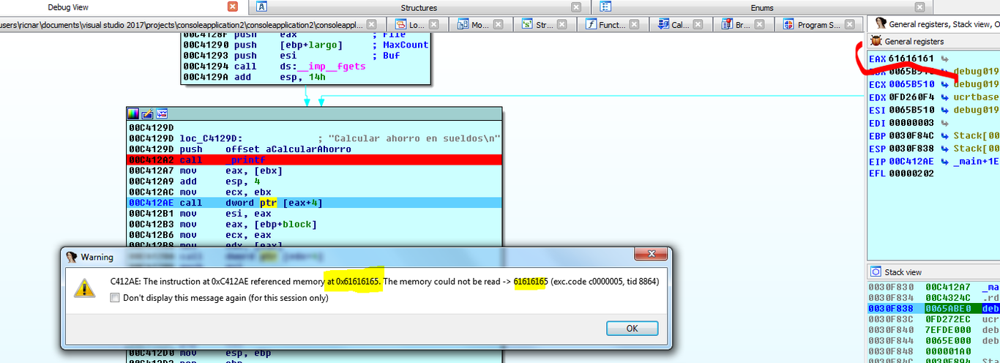
Allí vemos entonces como se desvía la ejecución de código, controlada por la fruta que ingrese.
Este obviamente es un ejemplo sencillo en un programa complejo la cosa es mas difícil de realizar pero la idea es esta, es importante tener claro el concepto de como se explota.
Lo veremos profundamente reverseado, en el vídeo de youtube correspondiente.
Hasta la parte 50
Ricardo Narvaja